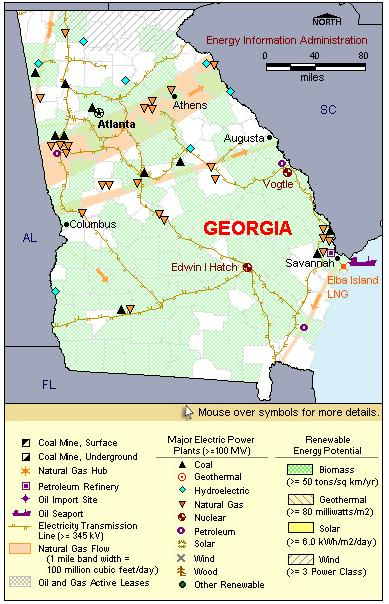

State Overview
There are two operating nuclear power plants in Georgia:
Edwin I. Hatch in Appling County
- The Hatch nuclear power plant is among the 100 largest power plants in the nation.
- The BWRs at the Hatch plant are Mark 1 containment type.
- In 1994, the plant site was certified as a wildlife habitat by the Wildlife Habitat Council.
Alvin W. Vogtle in Burke County
- The Vogtle nuclear power plant is among the 100 largest power plants in the nation.
- On June 3, 2009, the Nuclear Regulatory Commission (NRC) approved Georgia Power's license renewal application for the Vogtle plant.
- On March 31, 2008, Georgia Power applied to the Nuclear Regulatory Commission (NRC) for a combined Construction and Operating License for two AP 1000 reactors at the Vogtle site. More information on the proposed reactors is available in Status of Potential New Commercial Reactors in the United States.
Contribution of Nuclear Power
Georgia’s nuclear power stations provide almost 4,000 MW of net summer capacity, roughly 4% of the nation’s total nuclear capacity.
Nuclear power represents approximately 11% of Georgia’s total electric capacity but produces over 20% of the electricity generation, second only to coal.
Although Georgia’s overall electricity production has increased by over 40% since 1990, the State remains a net electricity importer.
License Renewals
- Hatch: The license renewal applications for Hatch units 1 & 2 were approved on January 7, 2002. The renewed licenses will expire in August 2034 and July 2038, respectively.
- Vogtle: The license renewal application for Vogtle units 1 & 2 was approved on June 3, 2009. The license for unit 1 now expires in January 2047. The license for unit 2 will expire in February 2049.
New Applications
- Vogtle: An application for two new PWR reactors at the Vogtle site was submitted on March 31, 2008. The units would be Westinghouse Advanced Passive 1000 (AP1000) reactors.
| 
|
| Georgia Total Electric Power Industry, Summer Capacity and Net Generation, by Energy Source, 2008 |
| Primary Energy Source |
Summer Capacity
(MW) |
Share of State Total
(Percent) |
Net Generation
(Thousand MWh) |
Share of State Total
(Percent) |
| Nuclear |
4,061 |
11.1 |
31,691 |
23.3 |
| Coal |
13,256 |
36.4 |
85,491 |
62.8 |
| Hydro and Pumped Storage |
3,716 |
10.2 |
1,988 |
1.5 |
| Natural Gas |
12,635 |
34.7 |
13,428 |
9.9 |
| Other1 |
- |
- |
51 |
* |
| Other Renewable1 |
601 |
1.6 |
2,782 |
2.0 |
| Petroleum |
2,187 |
6.0 |
742 |
0.5 |
| Total |
36,456 |
100.0 |
136,173 |
100.0 |
| Georgia Nuclear Power Plants, Summer Capacity and Net Generation, 2008 |
| Plant Name/Total Reactors |
Summer Capacity
(MW) |
Net Generation
(Thousand MWh) |
Share of State Nuclear
Net Generation
(Percent) |
Owner |
Edwin I Hatch
Unit 1, Unit 2 |
1,759 |
13,914 |
43.9 |
Georgia Power Co |
Vogtle
Unit 1, Unit 2 |
2,302 |
17,778 |
56.1 |
Georgia Power Co |
2 Plants
4 Reactors |
4,061 |
31,691 |
100.0 |
|
|
Plant Profiles
(Edwin I.) Hatch Nuclear Power Plant
| Edwin I Hatch |
| Unit |
Summer Capacity
(MW) |
Net Generation
(Thousand MWh) |
Summer Capacity Factor
(Percent) |
Type |
Commercial Operation Date |
License Expiration Date |
| 1 |
876 |
6,434 |
83.8 |
BWR |
12/31/1975 |
8/6/2034 |
| 2 |
883 |
7,480 |
96.7 |
BWR |
9/5/1979 |
6/13/2038 |
| |
1,759 |
13,914 |
90.3 |
|
|
|
Operator: Southern Nuclear Operating Company
Location and Service Territory: The Edwin I. Hatch nuclear power plant is near Baxley, Appling County, in southeastern Georgia. The plant, named for a former president and chairman of Georgia Power, is located on a 2,244-acre site.
Construction Cost: $3.214 billion (2007 USD)
Reactor Descriptions: The Hatch plant has two General Electric Type 4 boiling water reactors.
Cooling System: The Hatch plant relies on mechanical draft cooling towers that draw water from the Altamaha River.
(Alvin W.) Vogtle Nuclear Power Plant
| Vogtle |
| Unit |
Summer Capacity
(MW) |
Net Generation
(Thousand MWh) |
Summer Capacity Factor
(Percent) |
Type |
Commercial Operation Date |
License Expiration Date |
| 1 |
1,150 |
9,050 |
89.8 |
PWR |
6/1/1987 |
1/16/2047 |
| 2 |
1,152 |
8,727 |
86.5 |
PWR |
5/20/1989 |
2/9/2049 |
| |
2,302 |
17,778 |
88.2 |
|
|
|
Operator: Southern Nuclear Operating Company
Location and Service Territory: This power plant is located in Burke County, near Augusta, Georgia.
Construction Cost: Vogtle's construction costs were $19.071 billion (2007 USD)
Staffing: 840 employees
Reactor Descriptions: The Vogtle site includes two, Westinghouse four-loop pressurized water reactors. Each reactor vessel holds 193 fuel assemblies.
Cooling System: Vogtle draws cooling water from the Savannah River and supplements this cooling source with a pair of 548-foot tall natural draft towers.
see also:
more annual nuclear statistics
projected electricity capacity to 2035
international
electricity statistics
|
|